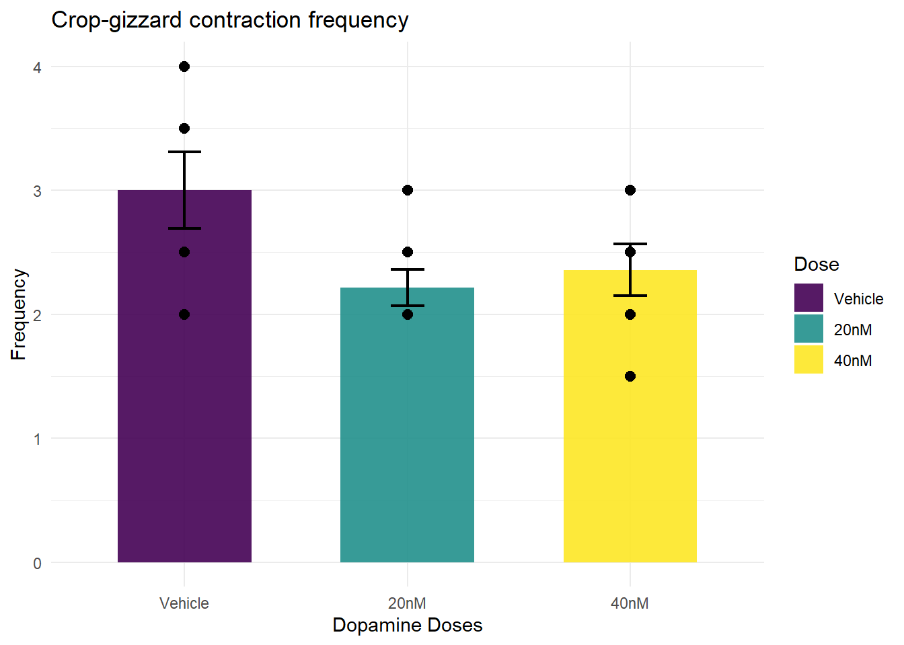
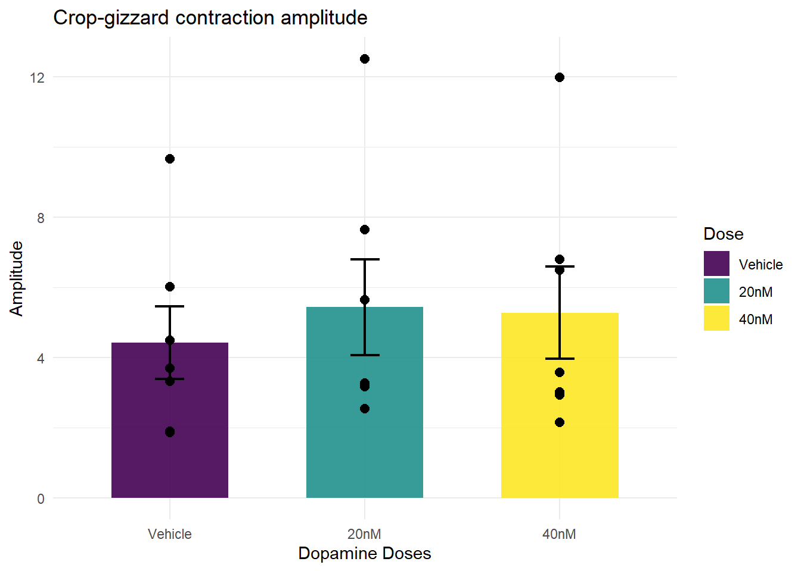

Fall 2025, I collected some data on earthworms crop-gizzard smooth muscle contractions and how extracellular dopamine at different concentrations affect the frequency and amplitude of the contractions. I made the graphs with SPSS initially, but they were called ugly by my instructor, which I agree. I ended up making the graphs in excel, but now I want to remake them in R.
library(tidyverse)
library(tidyr)
library(readxl)
setwd("D:/Yiwei/WFU/Senior/Spring 2026/PSY 279 B/Portfolio_ds4p/")
the.data <- read_excel("Crop-Gizzard.xlsx")Here, I first tried to plot a bar graph with three bars representing the average contraction frequency of the crop-gizzard under three different dopamine concentrations: vehicle, 20nM, and 40nM.
vehicle_freq_mean <- mean(the.data$frequency[the.data$dose == 1])
vehicle_freq_sd <- sd(the.data$frequency[the.data$dose == 1])
low_freq_mean <- mean(the.data$frequency[the.data$dose == 2])
low_freq_sd <- sd(the.data$frequency[the.data$dose == 2])
high_freq_mean <- mean(the.data$frequency[the.data$dose == 3])
high_freq_sd <- sd(the.data$frequency[the.data$dose == 3])
the.data <- the.data %>%
mutate(
dose = case_when(
dose == 1 ~ "vehicle",
dose == 2 ~ "20nM",
dose == 3 ~ "40nM"
)
)
#the.data %>%
# ggplot() +
# geom_bar(aes(x = dose,
# y = c(vehicle_freq_mean, low_freq_mean, high_freq_mean),
# stat = "identity"
# )
# ) +
# geom_errorbar((aes(x = dose,
# y = c(vehicle_freq_sd, low_freq_sd, high_freq_sd)
# )
# )
# ) +
# geom_point(aes(x = dose,
# y = frequency
# )
# )geom_bar() did not like the way I put in the aesthetics. I got an error message saying that “Aesthetics must be either length 1 or the same as the data (21).” and I need to fix the mapping of “y”. Next, I will attempt a different way of arragning my data to fix the mapping problem.
rm(list = ls())
the.data <- read_excel("Crop-Gizzard.xlsx")
the.data <- the.data %>%
mutate(
dose = case_when(
dose == 1 ~ "vehicle",
dose == 2 ~ "20nM",
dose == 3 ~ "40nM"
)
)
veh.data <- the.data %>%
filter(dose == "vehicle")
low.data <- the.data %>%
filter(dose == "20nM")
high.data <- the.data %>%
filter(dose == "40nM")
new.freq.data <- data.frame(
veh_freq = veh.data$frequency,
low_freq = low.data$frequency,
high_freq = high.data$frequency
)
mean_freq <- colMeans(new.freq.data)
#new.freq.data %>%
# ggplot()+
# geom_bar(x = names(new.freq.data),
# y = colMeans(new.freq.data, na.rm = TRUE)
# )At this point I have spent literal HOURS trying to get the bar plot to work, but the mappings are flagging errors all the time. Next, I want to see if turning the doses into factors and grouping the data might help with the problem.
rm(list = ls())
the.data <- read_excel("Crop-Gizzard.xlsx")
the.data <- the.data %>%
mutate(
dose = factor(
dose,
levels = c(1, 2, 3),
labels = c("Vehicle", "20nM", "40nM")
)
)
summary_data <- the.data %>%
group_by(dose) %>%
summarise(
mean_freq = mean(frequency, na.rm = TRUE),
sem_freq = sd(frequency, na.rm = TRUE) / sqrt(n()),
.groups = "drop"
)
ggplot() +
geom_col(data = summary_data,
aes(x = dose,
y = mean_freq,
fill = dose
),
width = 0.6,
alpha = 0.9
) +
geom_errorbar(data = summary_data,
aes(
x = dose,
ymin = mean_freq - sem_freq,
ymax = mean_freq + sem_freq
),
width = 0.15,
linewidth = 0.8
) +
geom_point(data = the.data,
aes(x = dose,
y = frequency),
size = 2.5
) +
labs(title = "Crop-gizzard contraction frequency",
x = "Dopamine Doses",
y = "Frequency",
fill = "Dose"
) +
theme_minimal() +
scale_fill_viridis_d()
Finally, it worked! I have successfully re-created the frequency graph that I once made with Excel within in 30 minutes now with R in a couple of hours. I tried a couple of ways to remove the legend, but failed miserably. I don’t think that’s worth digging deeper at this moment, so let’s move on! I’m really starting to miss Excel and even MATLAB. Now, with the codes I have on frequency, I’ll graph the amplitude.
summary_data2 <- the.data %>%
group_by(dose) %>%
summarise(
mean_amp = mean(amplitude, na.rm = TRUE),
sem_amp = sd(amplitude, na.rm = TRUE) / sqrt(n()),
.groups = "drop"
)
ggplot() +
geom_col(data = summary_data2,
aes(x = dose,
y = mean_amp,
fill = dose
),
width = 0.6,
alpha = 0.9
) +
geom_errorbar(data = summary_data2,
aes(
x = dose,
ymin = mean_amp - sem_amp,
ymax = mean_amp + sem_amp
),
width = 0.15,
linewidth = 0.8
) +
geom_point(data = the.data,
aes(x = dose,
y = amplitude),
size = 2.5
) +
labs(title = "Crop-gizzard contraction amplitude",
x = "Dopamine Doses",
y = "Amplitude",
fill = "Dose"
) +
theme_minimal() +
scale_fill_viridis_d()
The success of recreating both the frequency and amplitude graphs marks the end of this portfolio piece. This struggle deepened my understanding of how ggplot works and the importance of type and arrangement of data on subsequent analysis and graphing.